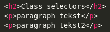

terug
Maak een aparte html bestand en voeg de volgende code toe:

Maak het onderstaande na door gebruik te maken van selectors. De kleuren die hiervoor gebruikt zijn is green en black.
Class Selectors
paragraph tekst
paragraph tekst2